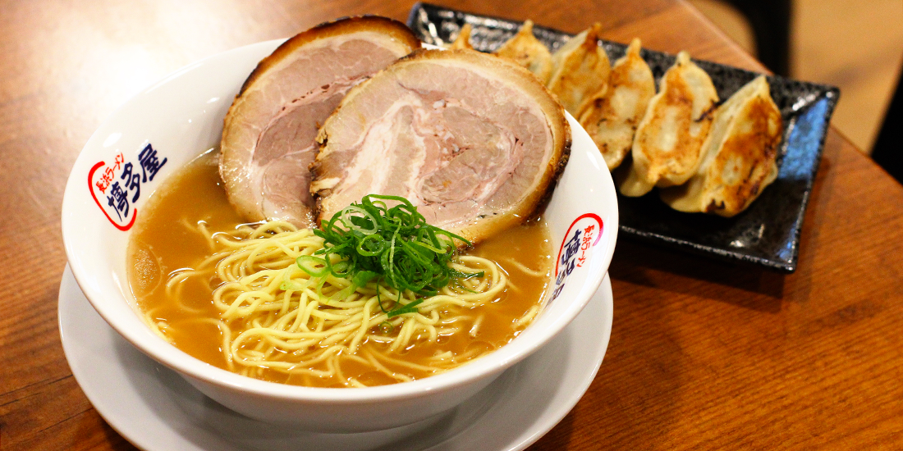

Ramem Recipe

Simply put, ramen is a Japanese noodle soup, with a combination of a rich flavoured broth, one of a variety of types of noodle and a selection of meats or vegetables, often topped with a boiled egg.
Ingredients
- 2 cups water
- 1 (3 ounce) package instant ramen noodles (exclude seasoning packet)
- 2 tablespoons garlic powder/li>
- 2 tablespoons onion powder
- 2 tablespoons ground ginger
- salt and ground black pepper to taste
Steps
- Bring 2 cups water to a boil in a saucepan;
- Cook noodles in boiling water until tender, about 3 minutes;
- Stir garlic powder, onion powder, and ginger into the noodles and water;
- season with salt and black pepper.
Go Back